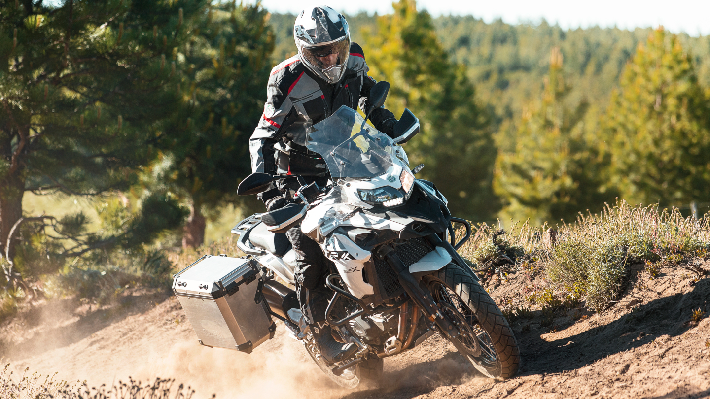

Introducción
La Benelli TRK 502 X fue diseñada para superar las condiciones de conducción. La TRK 502 X se adentra en tierra, arena y asfalto con igual rapidez.

La Benelli TRK 502 X fue diseñada para superar las condiciones de conducción. La TRK 502 X se adentra en tierra, arena y asfalto con igual rapidez.
La TRK 502 X cuenta con un parabrisas ajustable que ofrece una excelente protección contra el viento y el clima, lo que la hace ideal para viajes largos y aventuras en diferentes condiciones climáticas.
Gran potencia del motor DOHC de 8 válvulas, inyección electrónica, 500 cc, refrigeración líquida y arranque eléctrico del TRK 502 X.
El asiento ergonómico de la TRK 502 X ofrece un confort excepcional durante largos viajes, con un diseño que adapta a la postura del conductor y reduce la fatiga muscular.
La suspensión de largo recorrido de la TRK 502 X proporciona una conducción suave y estable tanto en carreteras pavimentadas como en terrenos accidentados, absorbiendo eficazmente las irregularidades del camino.
El sistema de escape ligero de la TRK 502 X no solo reduce el peso de la motocicleta, sino que también mejora el rendimiento del motor y reduce el ruido durante la conducción.
